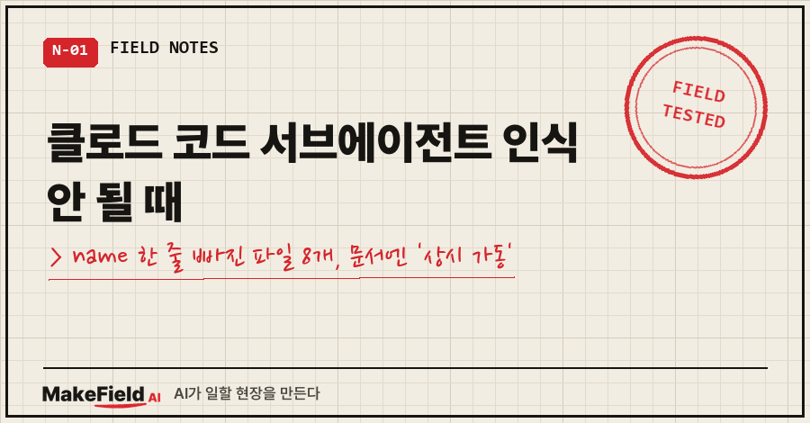
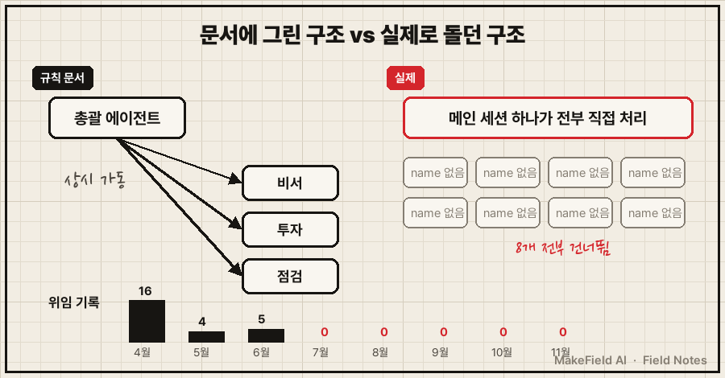
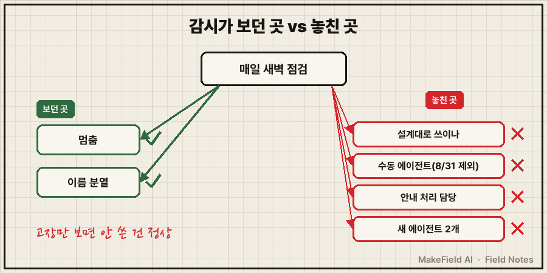
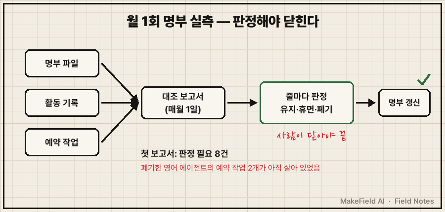

"이거 충격인데? 왜 그렇지?"
11월 4일, AI 에이전트 명부를 점검하다가 제가 친 말이에요.
규칙 문서 맨 위엔 "모든 세션에서 총괄 에이전트가 상시 활성화된다"고 적혀 있었는데, 그 총괄한테 일을 넘긴 기록이 6월 5일 이후 한 건도 없었거든요.
결론부터 말씀드릴게요. 클로드 코드 서브에이전트가 인식 안 될 때는 .claude/agents/ 안 파일 맨 위 머리말에 name: 줄이 있는지부터 보세요. 공식 문서 기준 name과 description은 필수이고, name이 없는 파일은 에러 없이 조용히 건너뜁니다. 제 PC에선 8개 파일이 전부 이 상태였어요.
저는 공장 기계 돌리는 일을 15년 한 사람이에요. 퇴근하면 집 PC에서 투자 정리, 일정 비서, 시스템 점검 같은 AI 에이전트 여러 개를 굴리고요. 이 글은 회사 일이 아니라 그 개인 시스템 이야기입니다.
1. 클로드 코드 서브에이전트가 왜 안 불렸나요?
파일 안에 이름표가 없어서, 클로드 코드가 그 파일을 에이전트가 아니라 그냥 문서로 취급했기 때문이에요.
백업해 둔 원래 파일 머리말이 이랬어요.
---
description: "문서 생성 워커. .docx/.pptx/.xlsx 생성, 보고서 작성에 사용합니다."
tools: ["Read", "Write", "Edit", "Bash", "Glob"]
model: sonnet
---설명도 있고, 도구도 있고, 모델도 정해 놨어요. 딱 하나 name:이 없었습니다.
고친 뒤엔 이렇게 한 줄이 붙었고요.
---
name: doc-worker
description: "문서 생성 워커. .docx/.pptx/.xlsx 생성, 보고서 작성에 사용합니다."
tools: ["Read", "Write", "Edit", "Bash", "Glob"]
model: sonnet
---이 한 줄을 8개 파일에 다 넣고 다음 세션을 열어 보니, 에이전트 목록에 8개가 전부 떴어요. 그 전엔 목록에 없었는데 아무 경고도 안 떴다는 게 함정이었죠.
공식 문서도 이렇게 적고 있어요. "name이 없는 파일은 조용히 건너뛰고, 에이전트 옆에 둔 문서로 취급한다."(Claude Code 공식 문서 Subagents, 2026-11 확인)
2. 문서엔 '상시 가동', 실제론 위임 0건
더 아팠던 건, 이름표 문제를 몰랐던 게 아니라 '안 쓰이고 있다는 사실' 자체를 몇 달간 몰랐다는 거예요.
처음엔 단순한 걸 봤어요. 명부에 "총괄 에이전트 3주째 기록 없음"이 떠 있었거든요. 그래서 AI한테 물었습니다.
"내가 오케스트레이터를 잘 쓰고 있는지 모르겠다. 내부적으로 그렇게 잘 동작하는지 네가 더 잘 알 거 같은데"
AI가 활동 기록을 뒤져서 가져온 답은 이랬어요.
- '총괄' 기록은 세션 끝날 때 붙인 이름표일 뿐, 내용은 이것저것 잡다한 일
- 10월 중순부터 같은 성격 일이 '비서' 이름표로 옮겨 가 있었음
- 총괄이 일을 나눠 줄 때 남기는 위임 기록은 4월 16건, 5월 4건, 6월 5건 — 그리고 6월 5일이 마지막
결국 설계는 "총괄이 나눠 주고 검증한다"였는데, 실제로는 메인 세션 하나가 전부 직접 하고 있었던 거예요. 서류상 조직도와 실제 일하는 방식이 5개월 가까이 따로 놀았던 거죠..
언제부터 서브에이전트가 안 불렸는지는 솔직히 모릅니다. 확실한 건 위임 기록이 6월에 끊겼고, 11월에 열어 본 파일 8개엔 이름표가 없었다는 것까지예요.

그림을 글로 옮기면, 왼쪽은 문서에 그려 둔 구조, 오른쪽은 실제로 돌던 구조예요. 위임 막대가 6월 뒤로 비어 있습니다.
3. 감시가 있었는데 왜 못 잡았나요?
제가 바로 되물었어요.
"그럼 가동 유무를 체크하고 검증하는 QC나 뭔가 감시 역할이 없다는 건가? 6월부터 멈춰 있는 거라면"
감시는 있었어요. 매일 새벽 도는 점검도 있고, 세션 시작할 때 뜨는 안내도 있었습니다. 문제는 엉뚱한 걸 보고 있었다는 거예요. AI가 찾아낸 빈틈은 4개였어요.
| 빈틈 | 실제 상태 | 왜 그랬나 |
|---|---|---|
| ① 고장만 봄 | 멈춤·이름 분열만 잡고 "설계대로 쓰이나"는 안 봄 | 처음부터 고장 감시로 설계 |
| ② 수동 에이전트 신선도 제외 | "며칠 안 씀"은 경보 안 함 | 8월 31일, 경보 피로 때문에 일부러 뺌 |
| ③ '최근 미사용' 안내 | 매 세션 떴지만 처리하는 담당이 없음 | 안내만 있고 닫는 절차 없음 |
| ④ 감시 대상 목록 | 코드에 박혀 있어 새 에이전트 2개 누락 | 명부와 따로 관리 |
②번이 제일 씁쓸했어요. 안 쓴 에이전트를 고장으로 오판하는 경보가 너무 자주 울려서 일부러 뺀 건데, 그 빈자리로 "한 번도 안 쓰인 부품"이 빠져나간 거죠. 고장만 보는 감시에선 한 번도 안 돈 부품이 영원히 정상으로 보입니다.
여러분이 만든 자동화 중에도, 에러는 없는데 실제로 한 번이라도 돌았는지 확인 안 해 본 게 있지 않나요?

4. 고친 방법: 총괄을 살린 게 아니라 문서를 내렸어요
고친 방향은 "총괄 에이전트를 다시 돌리자"가 아니라 "문서를 실제 모습에 맞추자"였어요. 5개월간 없이도 일이 돌았으니까요.
제가 "그러자 진행하면 되겠다, 별 문제없다"고 하고 바꾼 건 네 가지예요.
- 상시 총괄 규칙 폐지 — "메인 세션이 직접 처리하고, 그 분야 문서를 먼저 읽는다"로 실제대로 다시 씀
- 서브에이전트 8개 이름표 추가 — 큰 일에 여러 개 병렬로 쓸 때만 부르는 용도로 남김
- 감시 목록을 명부 파일에서 읽게 — 코드에 박힌 목록을 없애서 새 에이전트도 자동 포함
- 매일 경보 대신 월 1회 명부 실측 — 매월 1일 아침, 명부와 활동 기록·예약 작업을 대조한 보고서를 만들고, 제가 줄마다 판정해야 닫히게
첫 보고서에서 바로 하나가 걸렸어요. 10월에 '폐기'로 적어 둔 영어 공부 에이전트의 예약 작업 2개가 아직 살아 있었던 거예요. 판정 기다리는 줄은 모두 8건이 나왔고요.
EnglishAgent: 명부=폐기인데 활성 예약작업 2개
판정 필요 8건 (명부 8 + 출처 만료 0)
서브에이전트 인식 안 될 때 점검표
| 순서 | 확인할 것 | 정상 기준 |
|---|---|---|
| 1 | 파일 위치 | 프로젝트의 .claude/agents/ 또는 사용자 폴더 ~/.claude/agents/ |
| 2 | 머리말 | 맨 위 --- 사이에 name:과 description:이 둘 다 있음 |
| 3 | 이름 | 다른 에이전트와 겹치지 않음, : 같은 기호 없음 |
| 4 | 목록 확인 | 새 세션에서 @ 입력 시 이름이 보이거나, 이름으로 불렀을 때 위임이 일어남 |
| 5 | 실제 사용 | 최근 한 달에 몇 번 불렸는지 기록으로 셈 |
5번은 공식 문서엔 없는 제 덧붙임이에요. 1~4번은 "로드되나", 5번은 "쓰이나"를 보는 거라서요.
자주 묻는 질문
Q. name 줄이 없으면 에러 메시지가 뜨나요?
제 경우엔 아무것도 안 떴어요. 공식 문서도 "조용히 건너뛴다"고 적고 있고, 디버그 모드(claude --debug) 로그에서나 흔적을 찾을 수 있다고 안내합니다.
Q. 파일 이름과 name 값이 같아야 하나요?
아니요. 공식 문서 기준 파일 이름과 name은 달라도 됩니다. 저는 헷갈리지 않게 같게 맞췄어요.
Q. 총괄 에이전트는 아예 지웠나요?
안 지웠어요. 그동안 모은 조사 자료는 남겨 두고, "상시로 도는 에이전트"라는 표시만 내렸습니다. 큰 전수 점검처럼 여러 개를 동시에 돌릴 일이 생기면 그때 부를 거예요.
규칙 문서는 "이렇게 돌 것이다"를 적은 거고, 기록은 "이렇게 돌았다"를 적은 거예요. 둘이 갈라진 걸 알아채는 건 결국 기록 쪽을 세어 보는 사람이었습니다.
판정 8건을 어떻게 닫았는지는 다 닫고 나서 따로 정리해 볼게요.
에이전트 여러 개를 굴리며 넘어진 기록은 makefield.ai에서 이어서 보실 수 있어요.
출처
- Claude Code 공식 문서, Create custom subagents — 머리말 필드(name·description 필수), name 없는 파일 처리 → https://code.claude.com/docs/en/sub-agents
태그: #클로드코드서브에이전트 #서브에이전트인식안됨 #ClaudeCode #클로드코드 #서브에이전트 #AI에이전트 #에이전트오케스트레이션 #claude폴더 #YAML머리말 #자동화점검 #AI비서 #개인자동화 #AI오류해결 #멀티에이전트 #MakeFieldAI